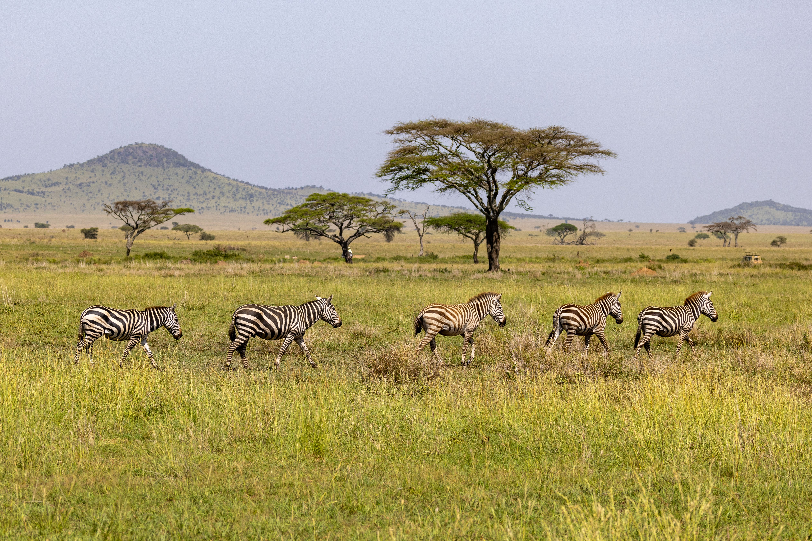

County Government of Kenya
Building a prosperous, inclusive and sustainable county through effective leadership, development and quality service delivery.
Discover Our County Our Services
Kajiado County is located in the southern part of Kenya. The county is known for its rich Maasai culture, beautiful landscapes, wildlife and growing economic opportunities.
The County Government is committed to improving the lives of residents through accessible healthcare, infrastructure development, agriculture, education support and economic empowerment.
Improving access to quality healthcare and strengthening county health facilities.
Supporting farmers and livestock keepers to improve productivity and livelihoods.
Improving roads, public facilities and infrastructure across the county.
Promoting sustainable water access, sanitation and environmental conservation.
Residents are encouraged to participate in county development discussions and share their views on local priorities.
Residents can explore available county services through our online information portal.